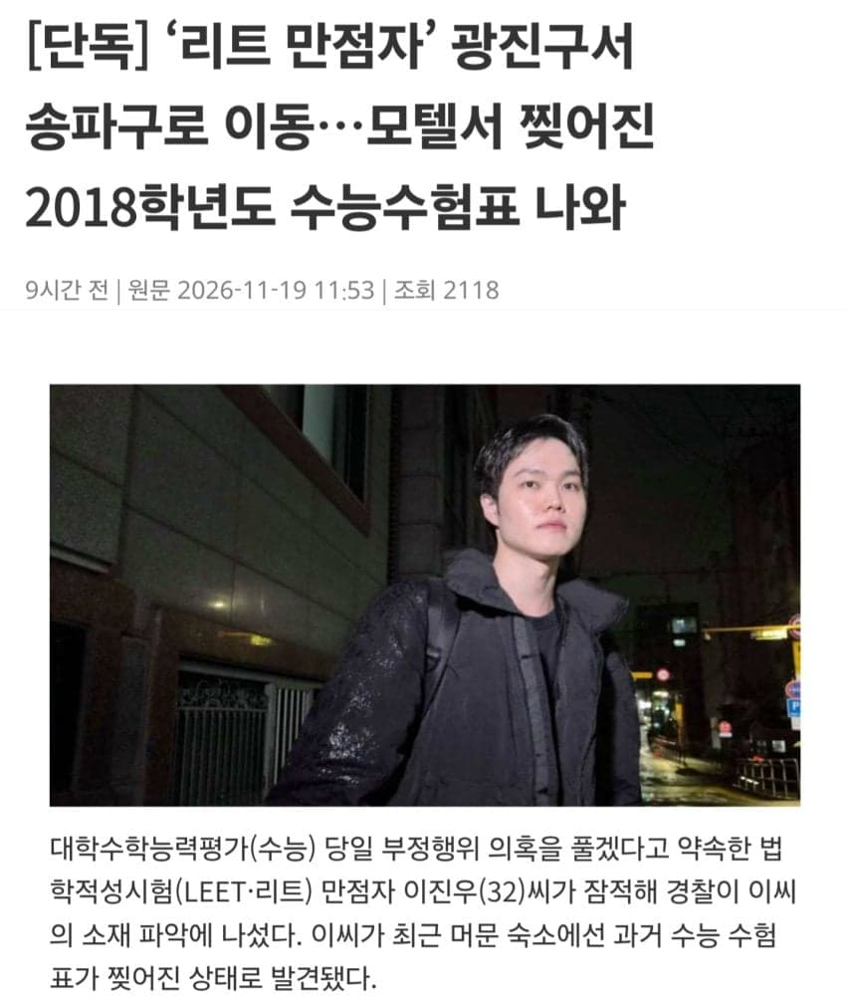
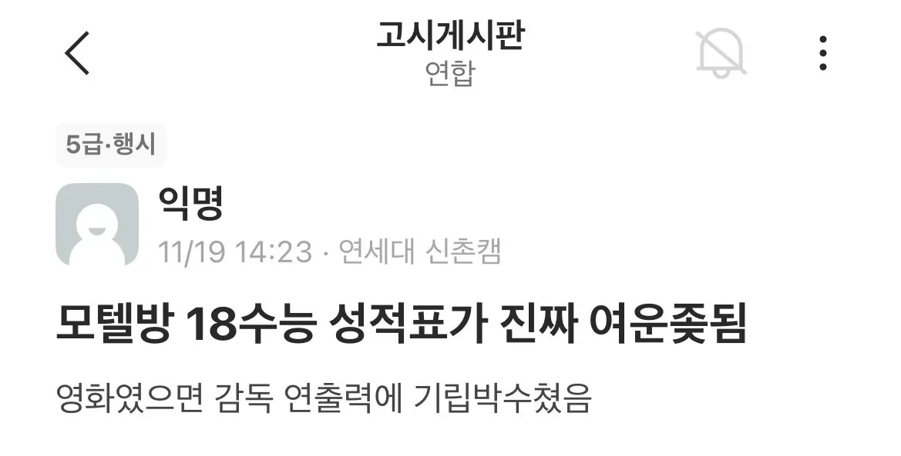
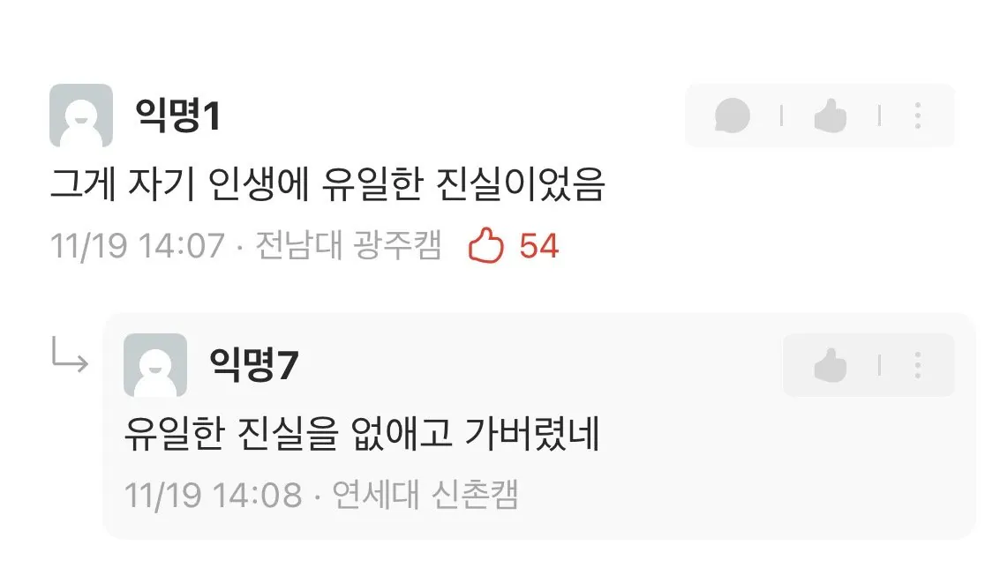
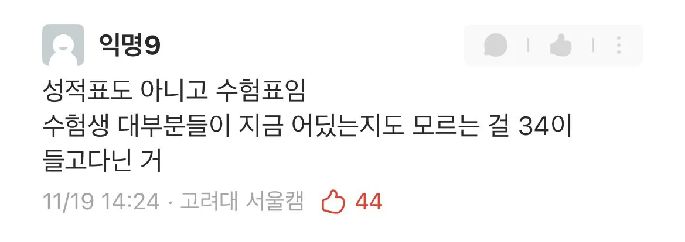
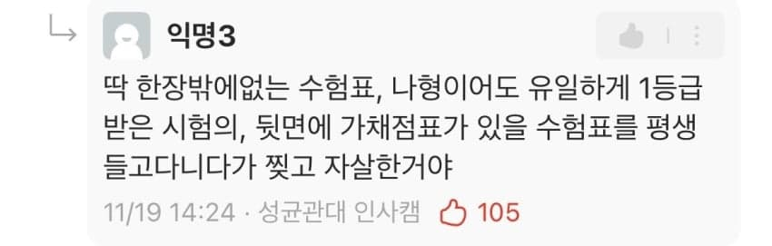
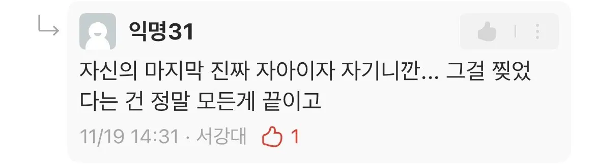
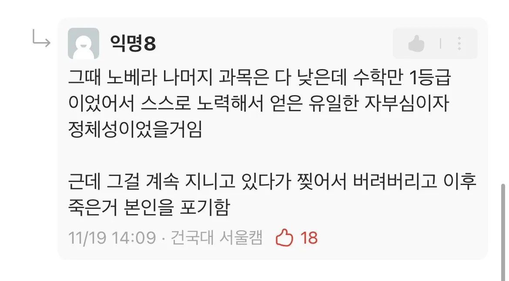
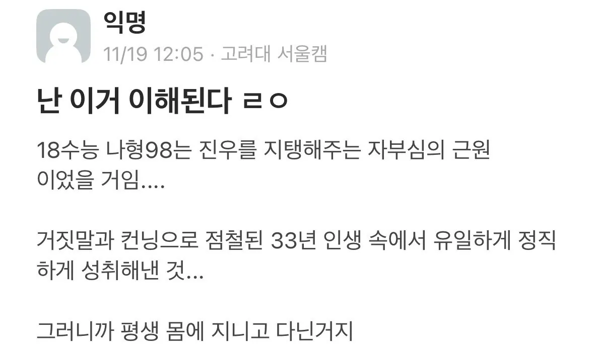
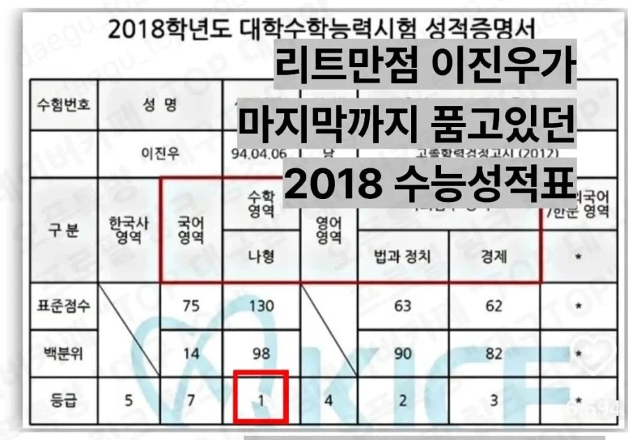
_DCCON_
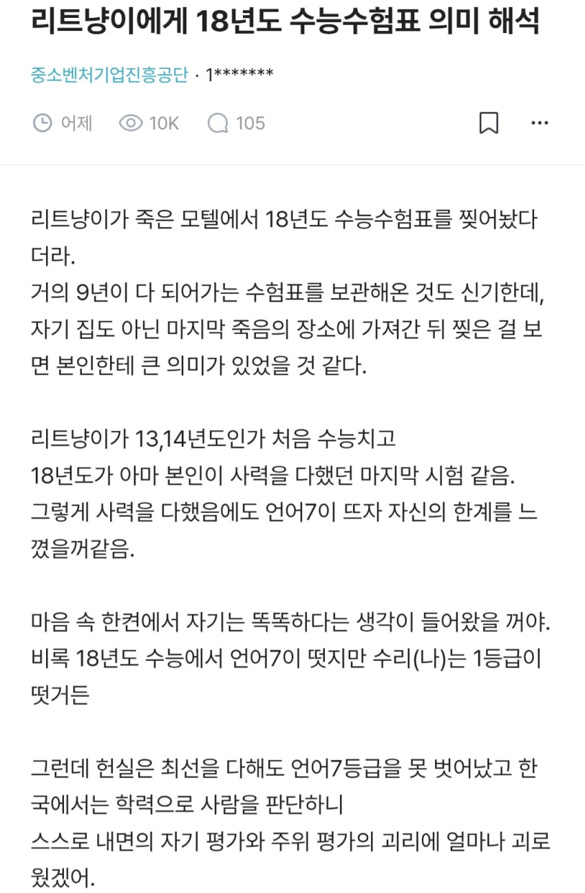
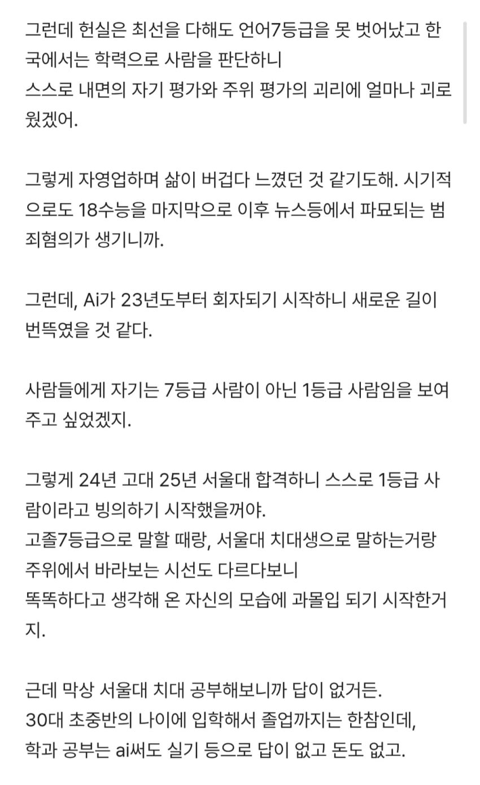
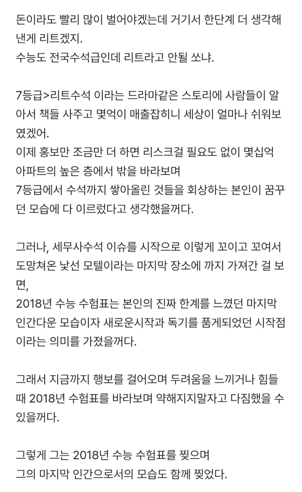
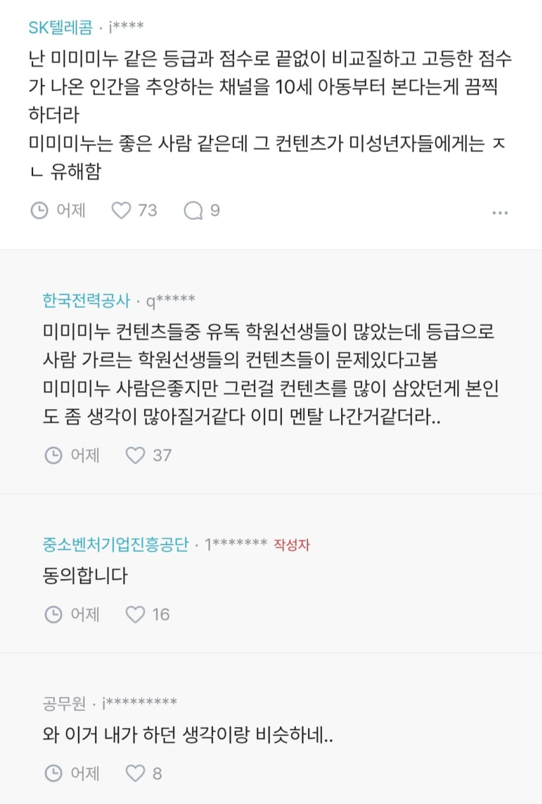
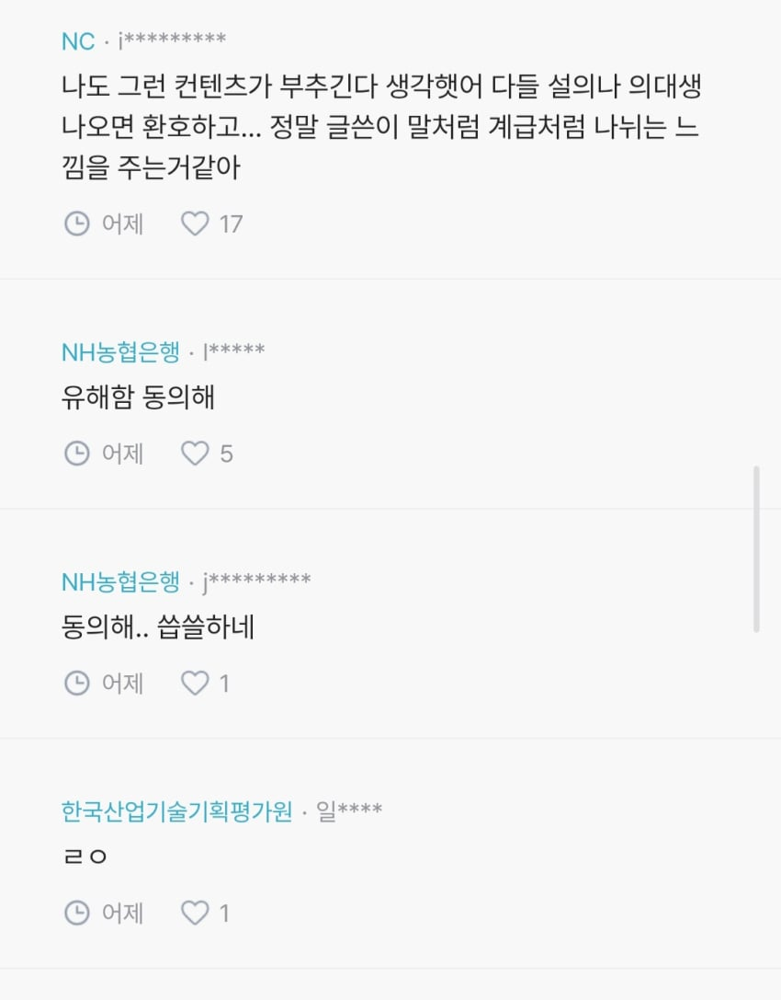
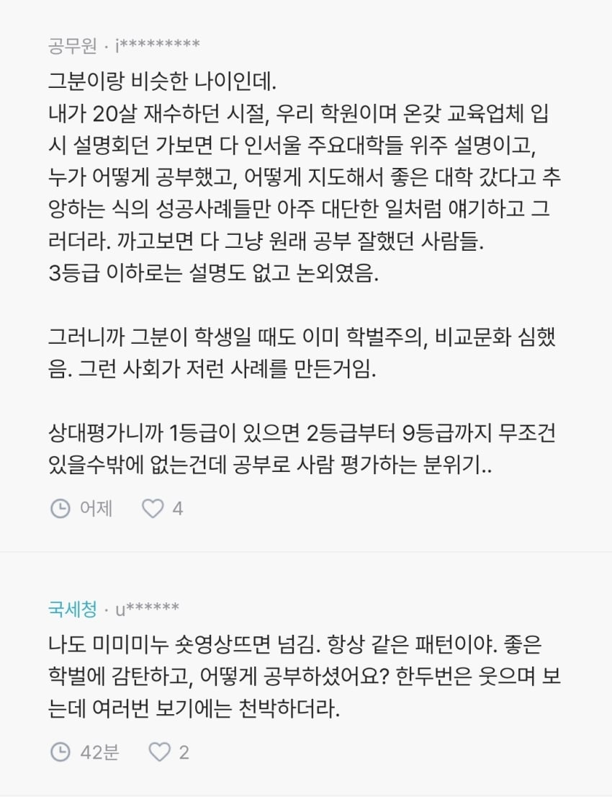















댓글
수집 당시 댓글 132개
3dd · 11.20 21:55:17
· ㄱㄱ · 11.20 23:00:18
ㅇㅇ · 11.20 21:56:01
도파민
GOAT
ㅇㅇ · 11.20 21:57:32
Ai가전부이루는가상에가치를두지마라
· ㅇㅇ · 11.20 22:00:05
ㅇㅇ · 11.20 21:57:40
· ㅇㅇ · 11.20 22:00:38
· ㅇㅇ · 11.20 22:00:45
· ㅇㅇ · 11.20 22:12:58
· ㅇㅇ · 11.20 23:04:00
· ㅔㅔ · 11.21 04:22:52
· ㅇㅇ · 11.21 10:47:37
· ㅇㅇ · 11.21 11:54:21
ㅇㅇ · 11.20 22:00:34
찢
ㅇㅇ · 11.20 22:00:41
· ㅇㅇ · 11.20 22:01:08
ㅇㅇ · 11.20 22:01:11
헌트 · 11.20 22:01:32
· 균형의수호자 · 11.20 22:04:41
· ㅇㅇ · 11.20 22:09:06
· 균형의수호자 · 11.20 22:09:28
ㅇㅇ · 11.20 22:01:44
· ㅇㅇ · 11.20 22:10:31
· ㅇㅇ · 11.20 22:16:21
· ㅇㅇ · 11.20 23:08:10
ㅇㅇ · 11.20 22:02:41
ㅇㅇ · 11.20 22:02:52
ㅇㅇ · 11.20 22:03:21
안락사
ㅇㅇ · 11.20 22:04:27
· ㅇㅇ · 11.20 22:09:16
안산출신 민주당 텃밭
ㅇㅇ · 11.20 22:05:04
· 니엄마자쿰 · 11.20 22:16:17
ㅇㅇ · 11.20 22:05:39
ㅇㅇ · 11.20 22:08:12
ㅇㅇ · 11.20 22:08:41
· ㅇㅇ · 11.20 22:13:33
ㅇㅇ · 11.20 22:09:22
ㅇㅇ · 11.20 22:13:36
ㅇㅇ · 11.20 22:14:55
ㅇㅇ · 11.20 22:16:43
まつり마츠리 · 11.20 22:17:36
· ㅇㅇ · 11.20 22:18:56
· 르붕이 · 11.21 07:53:54
ㅇㅇ · 11.20 22:26:24
ㅇㅇ · 11.20 22:26:51
ㅇㅇ · 11.20 22:30:06
멋진남자 · 11.20 22:30:35
ㅇㅇ · 11.20 22:32:29
ㅇㅇ · 11.20 22:34:16
ㅇㅇ · 11.20 22:35:45
ㅇㅇ · 11.20 22:37:39
ㅇㅇ · 11.20 22:38:22
린잘알 · 11.20 22:38:24
· ㅇㅇ · 11.21 08:55:05
NickWilde · 11.20 22:38:33
· ㅇㅇ · 11.20 22:40:54
· NickWilde · 11.20 22:41:12
ㅇㅇ · 11.20 22:54:38
· ㅇㅇ · 11.20 23:00:15
· ㅔㅔ · 11.21 04:25:49
ㅇㅇ · 11.20 22:57:18
ㅇㅇ · 11.20 22:58:26
ㅇㅇ · 11.20 23:03:21
ㅇㅇ · 11.20 23:04:48
· ㅇㅇ · 11.20 23:05:43
· ㅇㅇ · 11.21 05:48:41
ㅇㅇ · 11.20 23:09:34
· ㅇㅇ · 11.21 04:41:53
2456778 · 11.20 23:22:44
ㅇㅇ · 11.20 23:31:45
ㅇㅇ · 11.20 23:32:42
· ㅇㅇ · 11.20 23:32:53
· ㅇㅇ · 11.20 23:32:58
· ㅇㅇ · 11.21 10:56:42
· ㅇㅇ · 11.21 10:57:31
ㅇㅇ · 11.20 23:38:57
키리 · 11.20 23:41:07
히이잉 · 11.20 23:43:15
ㅇㅇ · 11.21 00:06:03
ㅇㅇ · 11.21 00:07:22
· ㅇㅇ · 11.21 00:08:25
ㅇㅇ · 11.21 00:21:38
· ㅇㅇ · 11.21 00:22:51
OO · 11.21 00:27:38
ㅇㅇ · 11.21 01:02:29
ㅇㅇ · 11.21 01:07:30
· ㅇㅇ · 11.21 05:40:35
ㅇㅇ · 11.21 02:01:54
ㅇㅇ · 11.21 02:01:58
잡붕이 · 11.21 02:30:40
ㅇㅇ · 11.21 03:29:23
ㅇㅇ · 11.21 06:21:24
ㅇㅇ · 11.21 07:00:18
ㅇㅇ · 11.21 08:10:32
ㅇㅇ · 11.21 08:13:16
ㅇㅇ · 11.21 09:31:47
ㅇㅇ · 11.21 10:02:08
· ㅇㅇ · 11.21 10:02:38
ㆁㆁ · 11.21 10:07:56
ㅇㅇ · 11.21 10:39:37
ㅇㅇ · 11.19 20:48:32
ㅇㅇ · 11.19 20:49:20
8==> · 11.19 20:54:08
· ㅇㅇ · 11.19 20:55:08
· 8==> · 11.19 20:56:28
· 밋아 · 11.19 21:18:27
· ㅇㅇ · 11.20 22:07:45
· ㅡ · 11.20 22:13:25
· ㅇㅇ · 11.20 23:03:46
ㅇㅇ · 11.19 21:07:18
시립 · 11.19 21:22:57
ㅇㅇ · 11.19 21:32:21
· ㅇㅇ · 11.19 21:40:52
· ㅇㅇ · 11.20 22:05:00
· ㅇㅇ · 11.21 04:43:34
Idus · 11.19 21:36:50
ㅇㅇ · 11.19 21:42:29
· ㅇㅇ · 11.20 22:00:52
ㅇㅇ · 11.19 21:43:02
· ㅇㅇ · 11.20 22:00:26
이로오라 · 11.19 21:45:23
오타니빠는계정 · 11.19 22:20:54
· ㅇㅇ · 11.20 22:20:37
· ㅇㅇ · 11.21 04:39:22
ㅇㅇ · 11.19 22:46:24
ㅇㅇ · 11.19 23:54:00
ㅇㅇ · 11.20 01:35:10
달배냥이 · 11.20 01:59:23
ㅇㅇ · 11.20 09:32:03
· ㅇㅇ · 11.20 21:57:46
· ㅇㅇ · 11.20 22:11:27
· ㅇㅇ · 11.20 22:12:06